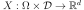
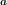
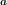

Parametric spectral density functions¶
Let  be a multivariate
stationary normal process of dimension  . We only treat here
the case where the domain is of dimension 1:
. We only treat here
the case where the domain is of dimension 1:  (
( ).
).
. We only treat here
the case where the domain is of dimension 1:
().If the process is continuous, then  . In the discrete
case,
. In the discrete
case,  is a lattice.
is a lattice.
. In the discrete
case, is a lattice. is supposed to be a second order process with zero mean and
we suppose that its spectral density function
is supposed to be a second order process with zero mean and
we suppose that its spectral density function
 defined in
(8) exists.
defined in
(8) exists.
 is the set of
-dimensional positive definite hermitian matrices.
is the set of
-dimensional positive definite hermitian matrices.This use case illustrates how the User can create a density spectral
function from parametric models. The library proposes the Cauchy
spectral model as a parametric model for the spectral density
fucntion  .
.
.The Cauchy spectral model
Its is associated to the Exponential covariance model. The Cauchy spectral model is defined by:
(1)¶
where  ,  and
,  and  are the parameters of the Exponential covariance model defined in
section [ParamStationaryCovarianceFunction]. The relation
(1) can be explicited with the spatial covariance function
defined in (6).
are the parameters of the Exponential covariance model defined in
section [ParamStationaryCovarianceFunction]. The relation
(1) can be explicited with the spatial covariance function
defined in (6).
API:
- See
CauchyModel
Examples:
- See /examples/probabilistic_modeling/parametric_spectral_density